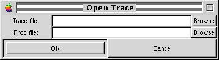

| Linux Trace Toolkit Reference Manual | |||
|---|---|---|---|
| <<< Previous Page | Home | Up | Next Page >>> |
Whenever you select to open a new trace, The Open Trace window will pop up:

Figure 1: The open Trace window
You can manually enter the filenames, or alternatively, you can click on either Browse buttons to display the standard GTK+ File window. Both filenames must be specified.
| <<< Previous Page | Home | Up | Next Page >>> |
| Linux trace toolkit | Open Trace window | ||